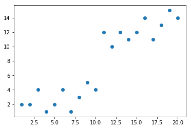
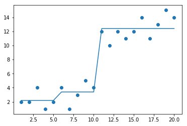

from numpy import *
#value of leaf node
def regLeaf(dataset):
return mean(dataset[:,-1])
#find the error
def regErr(dataset):
return var(dataset[:,-1])*dataset.shape[0]
#split the dataset for left and right
def splitDataset(dataset,feature,value):
mat0 = dataset[dataset[:,feature] < value,:]
mat1 = dataset[dataset[:,feature] >= value,:]
return mat0, mat1
#create a tree recursively
#i have used a dictionary bt you can follow oop concepts to create this
def create_tree(dataset, leafType = regLeaf ,errType = regErr , ops=(1,4)):
#ops = pre pruning parameters as they show better results than post pruning
feature , value = ChooseBestSplit(dataset,regLeaf,regErr,ops)
if feature == None:
return value
tree = {}
tree['feat'] = feature
tree['value'] = value
lset , rset = splitDataset(dataset,feature,value)
tree['left'] = create_tree(lset,leafType,errType,ops)
tree['right'] = create_tree(rset,leafType,errType,ops)
return tree
#finding the best split
def ChooseBestSplit(dataset,leafType,errType,ops):
#error limit
tolE = ops[0]
#min no of points on one side
tolN = ops[1]
if len(set(dataset[:,-1])) == 1:
return None, leafType(dataset)
m,n = dataset.shape
S = errType(dataset)
bestS = inf
bestIndex = 0
bestValue = 0
for featindex in range(n-1):
for splitValue in range(m-1):
mat0 , mat1 = splitDataset(dataset,featindex,splitValue)
if mat0.shape[0]< tolN or mat1.shape[0]< tolN:
continue
newS = errType(mat0) + errType(mat1)
if newS < bestS:
bestIndex = featindex
bestValue = splitValue
bestS = newS
if S - bestS < tolE:
return None,leafType(dataset)
mat0, mat1 = splitDataset(dataset,bestIndex,bestValue)
if mat0.shape[0]< tolN or mat1.shape[0]< tolN:
return None,LeafType(dataset)
return bestIndex,bestValue
In [ ]:
In [ ]:
In [253]:
import matplotlib.pyplot as plt
%matplotlib inline
plt.scatter(mattrain[:,0],mattrain[:,1])
Out[253]:

x = create_tree(mattrain)
In [255]:
x
Out[255]:
{'feat': 0,
'value': 11,
'left': {'feat': 0, 'value': 6, 'left': 2.2, 'right': 3.4},
'right': 12.4}
In [256]:
def isTree(obj):
return (type(obj).__name__=='dict')
def getMean(tree):
if isTree(tree['right']):
tree['right'] = getMean(tree['right'])
if isTree(tree['left']):
tree['left'] = getMean(tree['left'])
return (tree['left']+tree['right'])/2.0
#post pruning function
def prune(tree, testData):
if shape(testData)[0] == 0:
return getMean(tree)
if (isTree(tree['right']) or isTree(tree['left'])):
lSet, rSet = binSplitDataSet(testData, tree['feat'],tree['value'])
if isTree(tree['left']):
tree['left'] = prune(tree['left'], lSet)
if isTree(tree['right']):
tree['right'] = prune(tree['right'], rSet)
if not isTree(tree['left']) and not isTree(tree['right']):
lSet, rSet = binSplitDataSet(testData, tree['feat'],tree['value'])
errorNoMerge = sum(power(lSet[:,-1] - tree['left'],2)) +sum(power(rSet[:,-1] - tree['right'],2))
treeMean = (tree['left']+tree['right'])/2.0
errorMerge = sum(power(testData[:,-1] - treeMean,2))
if errorMerge < errorNoMerge:
print("merging")
return treeMean
else: return tree
else: return tree
In [257]:
# FOR FUTURE PURPOSES
# def linearSolve(dataSet):
# m,n = shape(dataSet)
# X = mat(ones((m,n))); Y = mat(ones((m,1)))
# X[:,1:n] = dataSet[:,0:n-1]; Y = dataSet[:,-1]
# xTx = X.T*X
# if linalg.det(xTx) == 0.0:
# raise NameError('This matrix is singular, cannot do inverse,try increasing the second value of ops')
# ws = xTx.I * (X.T * Y)
# return ws,X,Y
# def modelLeaf(dataSet):
# ws,X,Y = linearSolve(dataSet)
# return ws
# def modelErr(dataSet):
# ws,X,Y = linearSolve(dataSet)
# yHat = X * ws
# return sum(power(Y - yHat, 2))
In [273]:
def regTreeEval(model, inDat):
return float(model)
# def modelTreeEval(model, inDat):
# n = shape(inDat)[1]
# X = mat(ones((1,n+1)))
# X[:,1:n+1]=inDat
# return float(X*model)
def treeForeCast(tree, inData, modelEval=regTreeEval):
if not isTree(tree): return modelEval(tree, inData)
if inData[tree['feat']] < tree['value']:
if isTree(tree['left']):
return treeForeCast(tree['left'], inData , modelEval)
else:
print(inData[tree['feat']], tree['value'])
print(tree['left'],"left")
return modelEval(tree['left'], inData)
else:
if isTree(tree['right']):
return treeForeCast(tree['right'], inData , modelEval)
else:
print(inData[tree['feat']], tree['value'])
print(tree['right'],"right")
return modelEval(tree['right'], inData)
#PREDICTING THE OUTPUT
def createForeCast(tree, testData, modelEval=regTreeEval):
m=len(testData)
yHat = testData
yHat = yHat.astype(float)
print(yHat)
for i in range(m):
yHat[i] = treeForeCast(tree, mat(testData[i]),modelEval)
return yHat
In [274]:
x_train = [[1,2],[2,2],[3,4],[4,1],[5,2],[6,4],[7,1],[8,3],[9,5],[10,4],
[11,12],[12,10],[13,12],[14,11],[15,12],[16,14],[17,11],[18,13],[19,15],[20,14]]
x_test = [[2,2],[3,4],[4,1],[6,4],[8,3],[10,4],
[11,12],[13,12],[15,12],[17,11],[18,13],[20,14]]
mattrain = array(x_train)
mattest = array(x_test)
yHat = createForeCast(x, mattrain[:,0])
print(flip(yHat))
print(corrcoef(yHat, mattrain[:,1],rowvar=0)[0,1])
[ 1. 2. 3. 4. 5. 6. 7. 8. 9. 10. 11. 12. 13. 14. 15. 16. 17. 18.
19. 20.]
[[1]] 6
2.2 left
[[2]] 6
2.2 left
[[3]] 6
2.2 left
[[4]] 6
2.2 left
[[5]] 6
2.2 left
[[6]] 6
3.4 right
[[7]] 6
3.4 right
[[8]] 6
3.4 right
[[9]] 6
3.4 right
[[10]] 6
3.4 right
[[11]] 11
12.4 right
[[12]] 11
12.4 right
[[13]] 11
12.4 right
[[14]] 11
12.4 right
[[15]] 11
12.4 right
[[16]] 11
12.4 right
[[17]] 11
12.4 right
[[18]] 11
12.4 right
[[19]] 11
12.4 right
[[20]] 11
12.4 right
[12.4 12.4 12.4 12.4 12.4 12.4 12.4 12.4 12.4 12.4 3.4 3.4 3.4 3.4
3.4 2.2 2.2 2.2 2.2 2.2]
0.9629726340502686
In [215]:
n = mat(((12,1),(12,2)))
In [218]:
n[0,0]
Out[218]:
12
In [275]:
import matplotlib.pyplot as plt
%matplotlib inline
plt.scatter(mattrain[:,0],mattrain[:,1])
plt.plot(mattrain[:,0],yHat)
